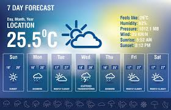

Weather Forecasting Application is one of the most common mini project in Software Development . In this article, we are going to make a Weather Forecasting Application from scratch which will tell us the weather of any location using its name . We will be covering all the steps you have to do while developing this mini project. The title of our project will be Todays Weather App.
 View ProjectThe Online Ambulance Booking Service leverages technology to create a user-friendly platform that enables individuals to request ambulance services with ease. Users can access the service through a web application or mobile app, making it accessible to a wide range of people.
View ProjectA library management system is a computerized information system that supports the management of library resources, including their acquisition, representation, and circulation. It is composed of interconnected subsystems that work together to achieve the common purpose of efficiently managing library operations.
View Project